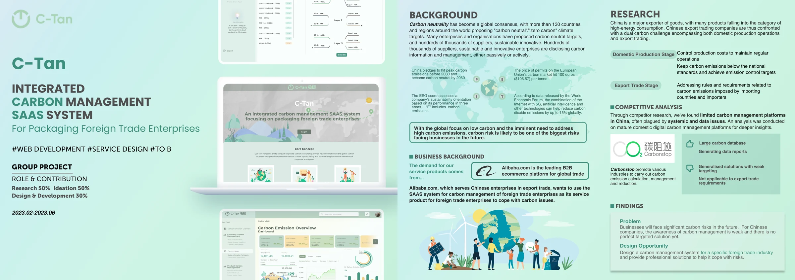
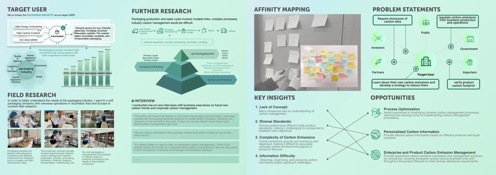
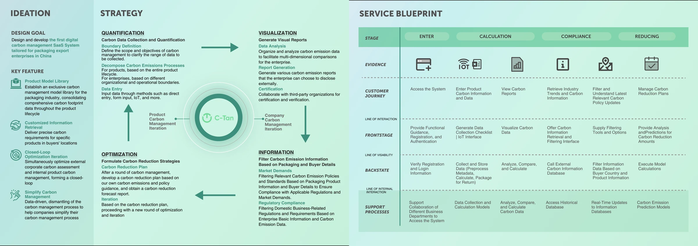
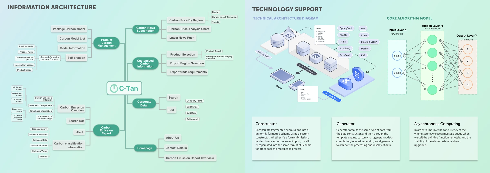
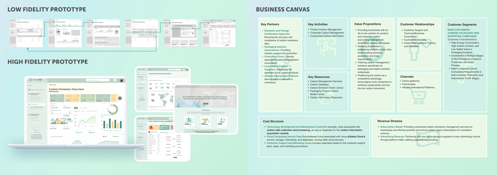

My contribution
- Conducted field research and interviews with packaging-industry executives.
- Co-developed the service concept and carbon-management workflow.
- Contributed interface design and development.
Background
Packaging exporters need to understand emissions across production and trade, yet carbon data and market requirements are fragmented. C-Tan explores a shared workspace tailored to those workflows.

User research
Field research and interviews identified gaps in carbon-management knowledge, differences between standards, and difficulty gathering information across the production cycle. The design translates those needs into product-specific information and guided data collection.

Mechanism
The proposed service connects quantification, visualization, relevant information, and reduction planning. Product and company workflows form a repeated cycle of collecting data, reviewing reports, and planning the next change.

Interaction paradigm
Users move between product models, emissions records, reports, and filtered information. The information architecture organizes these activities around the tasks of a packaging exporter, while shared data structures support different input methods.

Interface prototype
Low- and high-fidelity screens make the service flow concrete, from an emissions overview to product and company management. The accompanying business model describes how the service could be supported; it is a design proposal rather than a claim of commercial adoption.
